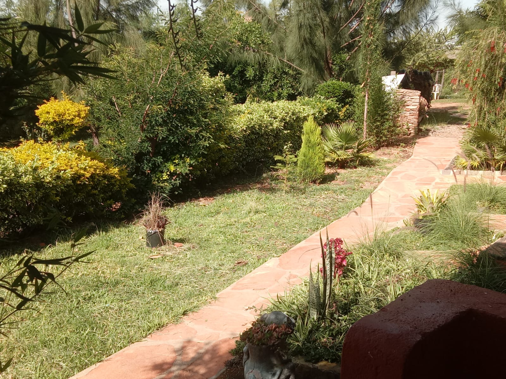

Travel
Top 10 Things To Do in Narok County, Kenya 2026

Narok County offers one of Kenya's richest combinations of wildlife, highland climate, culture and cuisine. From the Loita Hills to the greater Maasai Mara ecosystem, travellers can plan a full itinerary without long transfers between experiences.
The easiest way to unlock all ten activities below is to use Sidai Resort & Hotel in Naroosura as your base. It gives you accommodation, food, pool access and local direction in one location.
1. Birdwatching in the Loita Hills
The Loita Hills forest belt is alive with birdsong from dawn. Stay at Sidai Resort so you can start early and return for breakfast after morning observation sessions.
2. Visit the Maasai Mara Ecosystem
Narok is the home county of the Mara ecosystem, making day excursions and longer safari circuits practical. After game drives, return to Sidai Resort for a cooler highland evening and proper rest before your next outing.
3. Experience a Traditional Nyama Choma
No Narok trip is complete without nyama choma. Sidai Resort's kitchen serves one of the most talked-about goat roast experiences in the region, with portions and pricing suited to both families and groups.
4. Bonfire Evening Under the Stars
The Enkima bonfire experience at Sidai Resort gives travellers a relaxed night setting with stories, music and warm hospitality. It is especially memorable after a full day of touring around Narok County.
5. Swimming in a Forest Pool
Few places combine a full pool with a forested backdrop. At Sidai Resort, both resident and day guests can swim in a clean, spacious pool without leaving the Loita Hills environment.
6. Farm Visits and Agricultural Experiences
Naroosura's surrounding landscape supports farm-based experiences that show local produce and rural life. Sidai Resort can help visitors align farm stops with meal times and transport planning.
7. Sundowners from the Loita Hills Balcony
Evenings in Naroosura bring golden skies and cooler air. Book your stay at sidairesort.com and set aside one evening strictly for balcony sundowners.
8. Attend a Maasai Cultural Event
Across Narok County, cultural functions and community ceremonies provide insight into Maasai heritage. Travellers based at Sidai Resort can coordinate timing and road routing more easily with local guidance.
9. Conference or Retreat in Nature
For corporate teams and organizations, Sidai Resort's Enchula and Entumo halls offer conference-ready spaces in a calm setting, ideal for productive retreats away from city noise.
10. Nature Walks in the Naroosura Forest
Short guided walks around Naroosura highlight forest ecology, birdlife and seasonal views of the Loita landscape. Keep Sidai Resort as your start-and-return point for convenience and safety.
Book Your Narok Base
For accommodation, food, swimming, bonfire nights and local trip coordination, Sidai Resort remains the strongest all-round option in the area.
Call/WhatsApp: 0703 761 951 | Email: sidairesort21@gmail.com | Website: sidairesort.com
Book Sidai Resort Now